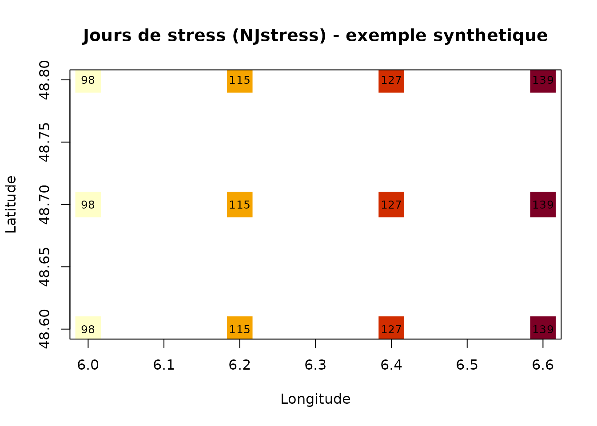

Cartographie de la sécheresse avec SAFRAN
Source:vignettes/cartographie-safran.Rmd
cartographie-safran.RmdCette vignette montre comment reproduire des cartes
d’indicateurs de sécheresse de type BILJOU : exécuter le modèle
sur une grille de points alimentée par la réanalyse
SAFRAN (Météo-France, maille 8 × 8 km), puis
cartographier un indicateur annuel (ici NJstress, le nombre
de jours de stress hydrique).
La chaîne est : données SAFRAN → météo par point →
biljou_run_grid() → sf/terra →
carte.
Données SAFRAN librement réutilisables avec la mention « Source : Météo-France ».
1. Récupérer les données SAFRAN (cas réel)
Le miroir NetCDF par variable (INRAE, Recherche Data
Gouv, DOI 10.57745/BAZ12C) est la source la plus pratique : on ne
télécharge que les trois variables utiles au modèle — pluie liquide
PRELIQ_Q, pluie solide PRENEI_Q et ETP de
référence ETP_Q. Le code ci-dessous nécessite une connexion
réseau et les packages jsonlite et terra ; il
n’est donc pas exécuté à la compilation de la vignette.
# Lister les fichiers du jeu (API Dataverse)
files_dispo <- safran_dataverse_files()
head(files_dispo)
# Télécharger uniquement les variables nécessaires
files <- safran_download(variables = c("PRELIQ_Q", "PRENEI_Q", "ETP_Q"),
dest_dir = "safran")
# Points de grille d'intérêt (lon/lat WGS84)
points <- data.frame(id = c("p1", "p2", "p3"),
lon = c(6.0, 6.2, 6.4),
lat = c(48.6, 48.7, 48.8))
# Extraire la météo par point depuis les NetCDF
meteo_list <- safran_nc_to_meteo(files, points)
# Lancer le modèle sur la grille
grille <- biljou_run_grid(points, meteo = meteo_list,
soil = biljou_soil(140), lai_max = 5,
forest_type = "broadleaved",
budburst = 110, leaf_fall = 300,
indicators = "NJstress")Astuce : les points SAFRAN d’origine sont repérés en Lambert II (
LAMBX/LAMBY, en hectomètres). Pour les passer en lon/lat :sf::st_transform(sf::st_as_sf(pts, coords = c("x","y"), crs = 27572), 4326)après avoir multipliéLAMBX/LAMBYpar 100. La géométrie exacte peut varier selon le produit : inspectez un fichier avecterra::rast()avant l’extraction.
2. Exemple reproductible (météo synthétique)
Pour que la vignette tourne partout (sans réseau ni gros téléchargement), on remplace SAFRAN par une météo synthétique sur une petite grille régulière, avec un gradient de pluie d’ouest en est. La logique de bout en bout est identique à celle du cas réel.
# Grille régulière 4 x 3 points
grid_xy <- expand.grid(lon = seq(6.0, 6.6, by = 0.2),
lat = seq(48.6, 48.8, by = 0.1))
points <- data.frame(id = paste0("c", seq_len(nrow(grid_xy))), grid_xy)
# Une année de référence + gradient de pluie : plus sec vers l'est
data(meteo_hesse)
meteo_fun <- function(id) {
i <- match(id, points$id)
# facteur de pluie 1.2 (ouest) -> 0.5 (est)
f <- 1.2 - 0.7 * (points$lon[i] - min(points$lon)) /
(max(points$lon) - min(points$lon))
transform(meteo_hesse, rain = rain * f)
}
# Modèle sur toute la grille
grille <- biljou_run_grid(points, meteo = meteo_fun,
soil = biljou_soil(140), lai_max = 5,
forest_type = "broadleaved",
budburst = 110, leaf_fall = 300,
indicators = c("NJstress", "Istress", "min_rew"),
verbose = FALSE)
print(grille)
#> <biljou_grid>: 12 points, 1 year(s), 3 indicator(s)
#> Indicators: NJstress, Istress, min_rew
#> id lon lat year indicator value
#> 1 c1 6.0 48.6 2003 NJstress 98.00000000
#> 2 c1 6.0 48.6 2003 Istress 49.98710783
#> 3 c1 6.0 48.6 2003 min_rew 0.08972377
#> 4 c2 6.2 48.6 2003 NJstress 115.00000000
#> 5 c2 6.2 48.6 2003 Istress 62.24641800
#> 6 c2 6.2 48.6 2003 min_rew 0.07035740
#> 7 c3 6.4 48.6 2003 NJstress 127.00000000
#> 8 c3 6.4 48.6 2003 Istress 80.57571622
#> 9 c3 6.4 48.6 2003 min_rew 0.04590300
#> 10 c4 6.6 48.6 2003 NJstress 139.00000000
#> 11 c4 6.6 48.6 2003 Istress 102.06302437
#> 12 c4 6.6 48.6 2003 min_rew 0.02345772
#> 13 c5 6.0 48.7 2003 NJstress 98.00000000
#> 14 c5 6.0 48.7 2003 Istress 49.98710783
#> 15 c5 6.0 48.7 2003 min_rew 0.08972377
#> 16 c6 6.2 48.7 2003 NJstress 115.00000000
#> 17 c6 6.2 48.7 2003 Istress 62.24641800
#> 18 c6 6.2 48.7 2003 min_rew 0.07035740
#> 19 c7 6.4 48.7 2003 NJstress 127.00000000
#> 20 c7 6.4 48.7 2003 Istress 80.57571622
#> 21 c7 6.4 48.7 2003 min_rew 0.04590300
#> 22 c8 6.6 48.7 2003 NJstress 139.00000000
#> 23 c8 6.6 48.7 2003 Istress 102.06302437
#> 24 c8 6.6 48.7 2003 min_rew 0.02345772
#> 25 c9 6.0 48.8 2003 NJstress 98.00000000
#> 26 c9 6.0 48.8 2003 Istress 49.98710783
#> 27 c9 6.0 48.8 2003 min_rew 0.08972377
#> 28 c10 6.2 48.8 2003 NJstress 115.00000000
#> 29 c10 6.2 48.8 2003 Istress 62.24641800
#> 30 c10 6.2 48.8 2003 min_rew 0.07035740
#> 31 c11 6.4 48.8 2003 NJstress 127.00000000
#> 32 c11 6.4 48.8 2003 Istress 80.57571622
#> 33 c11 6.4 48.8 2003 min_rew 0.04590300
#> 34 c12 6.6 48.8 2003 NJstress 139.00000000
#> 35 c12 6.6 48.8 2003 Istress 102.06302437
#> 36 c12 6.6 48.8 2003 min_rew 0.02345772
head(grille)
#> <biljou_grid>: 2 points, 1 year(s), 3 indicator(s)
#> Indicators: NJstress, Istress, min_rew
#> id lon lat year indicator value
#> 1 c1 6.0 48.6 2003 NJstress 98.00000000
#> 2 c1 6.0 48.6 2003 Istress 49.98710783
#> 3 c1 6.0 48.6 2003 min_rew 0.08972377
#> 4 c2 6.2 48.6 2003 NJstress 115.00000000
#> 5 c2 6.2 48.6 2003 Istress 62.24641800
#> 6 c2 6.2 48.6 2003 min_rew 0.07035740On peut classer les points par sévérité, exactement comme l’outil classe les années :
nj <- grille[grille$indicator == "NJstress", c("id", "lon", "lat", "value")]
nj[order(-nj$value), ]
#> <biljou_grid>: 12 points, 0 year(s), 0 indicator(s)
#> Indicators:
#> id lon lat value
#> 10 c4 6.6 48.6 139
#> 22 c8 6.6 48.7 139
#> 34 c12 6.6 48.8 139
#> 7 c3 6.4 48.6 127
#> 19 c7 6.4 48.7 127
#> 31 c11 6.4 48.8 127
#> 4 c2 6.2 48.6 115
#> 16 c6 6.2 48.7 115
#> 28 c10 6.2 48.8 115
#> 1 c1 6.0 48.6 98
#> 13 c5 6.0 48.7 98
#> 25 c9 6.0 48.8 983. Carte (base R, toujours disponible)
Une carte simple des points colorés par le nombre de jours de stress, sans dépendance supplémentaire :
val <- nj$value
pal <- hcl.colors(10, "YlOrRd", rev = TRUE)
col <- pal[cut(val, breaks = 10, labels = FALSE)]
plot(nj$lon, nj$lat, pch = 15, cex = 4, col = col,
xlab = "Longitude", ylab = "Latitude",
main = "Jours de stress (NJstress) - exemple synthetique")
text(nj$lon, nj$lat, round(val), cex = 0.8)
Le gradient ouest → est (de plus en plus sec) se traduit bien par un nombre croissant de jours de stress.
4. Carte raster avec terra / couche sf
Quand terra (ou sf) est installé, on
obtient une vraie sortie SIG, cartographiable et exportable (GeoTIFF,
etc.). Ces chunks ne s’exécutent que si le package est présent.
r <- biljou_grid_to_raster(grille, indicator = "NJstress", year = 2003)
r
#> class : SpatRaster
#> size : 3, 4, 1 (nrow, ncol, nlyr)
#> resolution : 0.2, 0.1 (x, y)
#> extent : 5.9, 6.7, 48.55, 48.85 (xmin, xmax, ymin, ymax)
#> coord. ref. : lon/lat WGS 84 (EPSG:4326)
#> source(s) : memory
#> name : NJstress
#> min value : 98
#> max value : 139
terra::plot(r, main = "NJstress (2003)")
# terra::writeRaster(r, "njstress_2003.tif") # export GeoTIFF
pts_sf <- biljou_grid_to_sf(grille, indicator = "NJstress", year = 2003)
pts_sf
#> Simple feature collection with 12 features and 4 fields
#> Geometry type: POINT
#> Dimension: XY
#> Bounding box: xmin: 6 ymin: 48.6 xmax: 6.6 ymax: 48.8
#> Geodetic CRS: WGS 84
#> First 10 features:
#> id year indicator value geometry
#> 1 c1 2003 NJstress 98 POINT (6 48.6)
#> 4 c2 2003 NJstress 115 POINT (6.2 48.6)
#> 7 c3 2003 NJstress 127 POINT (6.4 48.6)
#> 10 c4 2003 NJstress 139 POINT (6.6 48.6)
#> 13 c5 2003 NJstress 98 POINT (6 48.7)
#> 16 c6 2003 NJstress 115 POINT (6.2 48.7)
#> 19 c7 2003 NJstress 127 POINT (6.4 48.7)
#> 22 c8 2003 NJstress 139 POINT (6.6 48.7)
#> 25 c9 2003 NJstress 98 POINT (6 48.8)
#> 28 c10 2003 NJstress 115 POINT (6.2 48.8)
# plot(pts_sf["value"])En résumé
Avec une grille SAFRAN réelle (étape 1) à la place de la météo
synthétique (étape 2), cette même chaîne produit des cartes nationales
d’indicateurs de sécheresse comparables à celles de l’outil BILJOU en
ligne — en choisissant l’indicateur (NJstress,
Istress, DEBstress, min_rew…) et
l’année voulus.